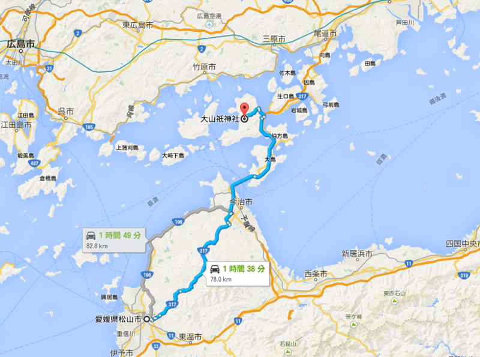
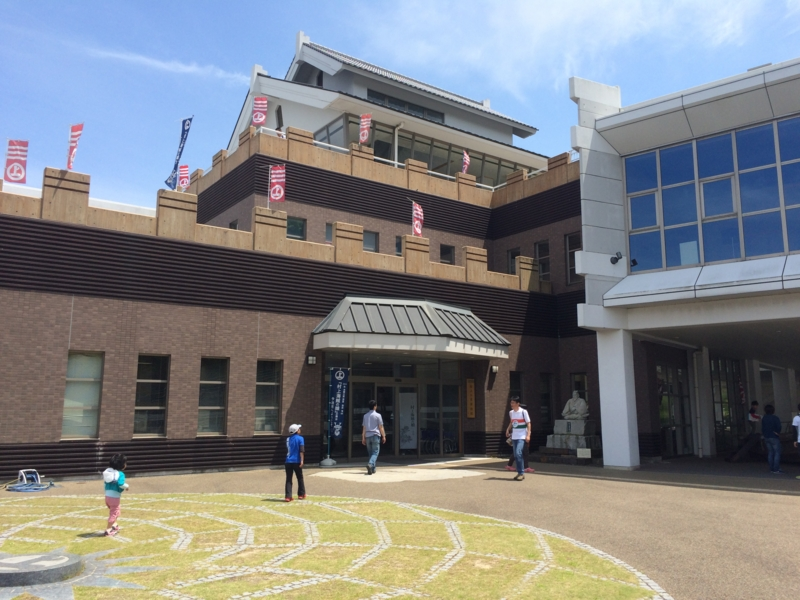
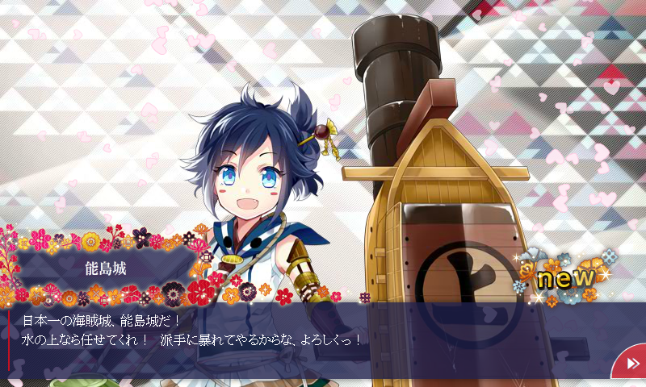
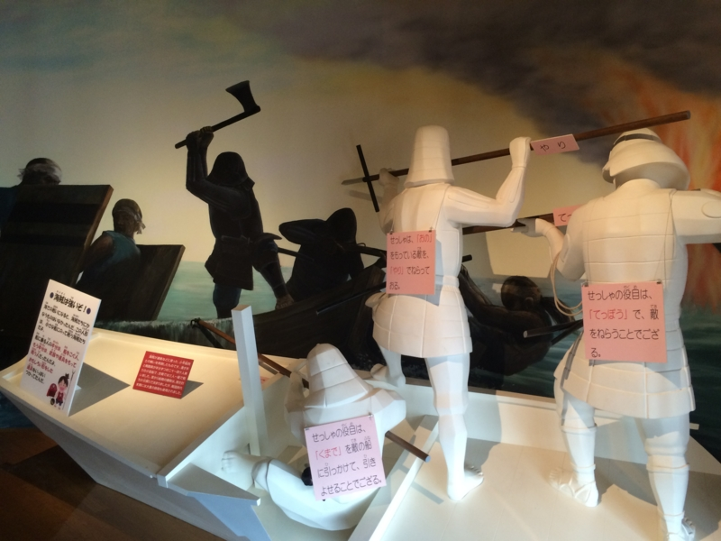

バイク：しまなみ海道行ったんだけど、降りる島を間違った。
公開日：

GW 最終日は、バイクでお出かけ。前々から行ってみたかった、大山祇神社へ詣でる。GB250 のエンジンがまたかからなくて困ったが（この前バッテリーを交換したばかりなので、始動性が悪いのはどうやらバッテリーが原因ではないらしい）、一度かかってしまえば割とスムーズに走ってくれた。
今治へは、海沿いのルートと山の中を通るルートがあるのだけど、今回は海沿いを選択。海沿いのルートの方が遠回りなのだけど、家の前を走る196号線をずーっとまっすぐ走るだけなので、まだ地元の道になれていない＆ナビのないわしでも道に迷いようがないのがメリット（ぁ
— ハロー！！だるやなぎモザイク (@daruyanagi) 2015, 5月 6景色もキレイだしね。残念ながら行きの午前中は少し曇りがかっていて、少し肌寒いぐらいだったのだけど、だんだん晴れてきて気持ちのいい天気になってきた。
— ハロー！！だるやなぎモザイク (@daruyanagi) 2015, 5月 6でっかいデリックや、
— ハロー！！だるやなぎモザイク (@daruyanagi) 2015, 5月 6工場？をみるとテンション上がる。ときどきサイクリングのひとや、お遍路さんともすれ違った。

そして、しまなみ海道突入……したのだけど。大三島と大島、間違って降りちゃった／(＾o＾)＼ 名前、ややこしいんじゃよ。来島（くるしま）海峡だけに、来る島間違った／(＾o＾)＼ みたいな感じだよ。
伊予大島？ お腹空いたーーー pic.twitter.com/agJhsFklkO
— ハロー！！だるやなぎモザイク (@daruyanagi) 2015, 5月 6達成感に浸ってる場合じゃない。まぁ、でも、降りちゃったものは仕方ない。大島南 IC は本州方面への乗り口がないので、8km 離れた大島北 IC まで走る。
すると、「村上水軍博物館」「能島城跡」などの案内が見える。これはちょっと面白そうだなと思い、大島北 IC をやり過ごして、少し足を延ばしてみた。

なかなか立派で、新しい建物だ。潮の香りと、どこからともなく流れてくる魚を焼いた匂い。お腹がすきすぎてヤバい。
I'm at 村上水軍博物館 in 今治市, 愛媛県 https://t.co/BT5TqRttor pic.twitter.com/QXD7iA6qIq
— ハロー！！だるやなぎモザイク (@daruyanagi) 2015, 5月 6入館料300円。あと、タオル・ハンカチ類を持ってくるのを忘れてしまったので、村上水軍ハンドタオルを売店で購入。550円なり。丸に「上」と書かれたそのタオルは肌触りがよく、さすが今治、お土産のタオルもなかなかなのモノだと感心する。
真ん中のしまが城らしい pic.twitter.com/CEREamh9sK
— ハロー！！だるやなぎモザイク (@daruyanagi) 2015, 5月 6「村上水軍博物館」は集落を抜けたちょっとわかりにくいところにあるのだけど、どうやら「能島城跡」が一望できるスポットだからというのが理由らしい。

ここに海賊たちが住んでたんだなぁ。

展示は子ども向けにも配慮されていて、実際に触って体験できるタイプの展示も少なくなかった。わりと充実していて、300円はお得だな、と感じるなど。もし子どもがいれば一緒に来たいものだ。
お腹空きすぎたので、ここでご飯食べちゃおうかと思ったのだけど、大三島の方が大きいし、いいごはん屋さんあるかなとじっと我慢。大島北 IC に戻って、大三島を目指すのでした。
――続く、かも。